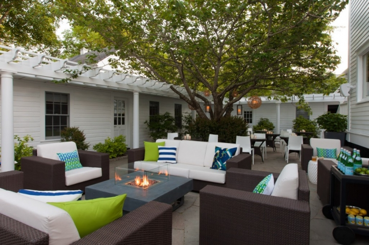
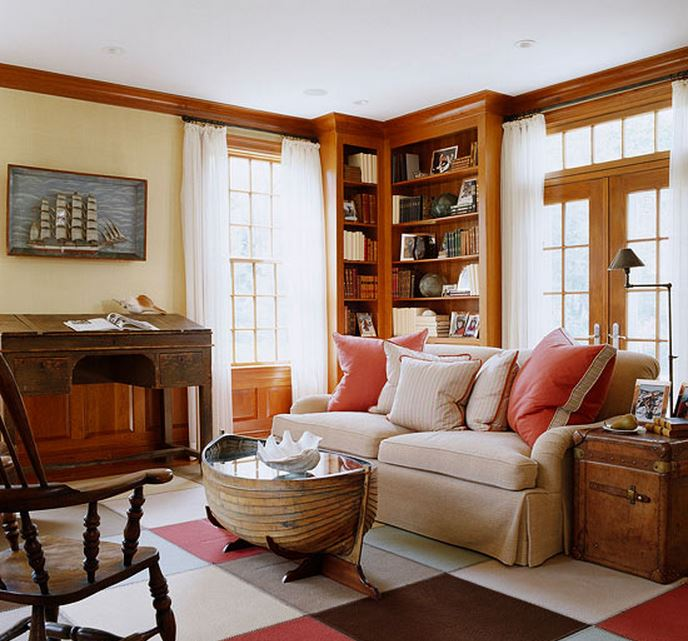

.png)
.PNG)
.PNG)
.PNG)
.PNG)
.PNG)
.JPG)
.JPG)
.PNG)
.PNG)


I think I will start this like Carolyn began her comment on the last post…
Good gracious alive!!
I am totally blown away by ALL of your extremely encouraging words.  Truly.  Some made me laugh out loud…Scribbler’s about “drinking the Koolaid and joining the Coven,” Jill’s “Who gave you access to inside my head,” Cindy’s offer to finish the room above the garage to keep me blogging (my husband really loved that one!), Dawn’s offer for a “campaign to raise funds” (another one my husband liked 🙂 ) and a reader’s email that read, “I don’t care if you advertise cigarettes – I’ll still be reading your blog and copying your decorating,” (but of course she was joking! LOL.)
Some were soooo very sweet they brought tears to my eyes.  (Jayne, thank you for your sweet tweet too.)And all of them gave me a huge smile.  I think I need to track down a certain pots and pan salesman that I ran off years ago and apologize because according to Marianne and Sue, the cookware is phenomenal. 🙂

I am normally very good about inferring things from texts (heck, I taught that in reading for decades!) but somehow I missed that in my own writing here.  I guess I was sooo worried that those bloggers who do have advertisements on their blog and do read my posts would be offended by my writing, that I never in a million years would have dreamed that you thought I was quitting! Dummy me.  When Barbara first commented that, it surprised me, but then over and over you all said it.  I apologize, I didn’t mean to make you think that!  And to those of you who skipped to the end before you read the whole post….shame on you, you naughty children! (I do the same thing with books. 🙂 ) A big thank you to those of you who are always so faithful about leaving your comments and another big one to those of you who have never left comments before but decided to jump in this time.  Know that you ALL are very much appreciated.
Okay, that is enough touchy-feely stuff. 🙂 How about we get to this weekend’s things to talk about?
1. Â The boutique hotel at the top of the post is in Nantucket and has recently been totally renovated to a fresh upscale style. Â They even have that little courtyard area up above to enjoy. Â Read about all of it here. (One of the rooms has a pair of chairs upholstered in black and white buffalo check!)
source
2. Â Do you remember my posts on talented Gary McBournie? Â He has a good article on tips for decorating using your floorplan and thinking about scale, paint, function and other details. Check it out here
3.  Another article in Traditional Home you might like to read today is this one.  It is a feature about a house in South Carolina that has that gorgeous room above (and more!)
4. Â Now let’s go to North Carolina. Do you remember my posts on Little Pond Farm? Â Well the wonderful innkeepers there were recently interviewed and filmed for a television show. Â (Congratulations Gaye and Frank!) You can take a video tour of some of the rooms by clicking here. Â Their part begins a little before the 15 minute mark in the video.
5.  My husband and I had a date night last night. 🙂  We dined at a Greek restaurant that serves some delicious European inspired dishes.  I had planned to order just a salad and dessert, but their entrees were too tempting. I couldn’t resist. 🙠 So we had a shared dessert….

Tiramisu cake…very delicious. Â You can check out my mom’s box cake recipe here or another totally from scratch one here. Either way, I could probably eat the entire thing!
6. Â We also went to see this movie…
It was cute…nothing really award winning, but entertaining. Â My favorite scene was the very last one…totally sweet (and the credits roll with a very pretty piano piece.) Â It did not have the wonderful houses that other Diane Keaton movies have, but one of the homes did have a to-die-for-kitchen with some beautiful yellow wallpaper. Â I am waiting to see if it shows up somewhere on the internet.
7.  The movie opens with this scene…a fun little flight. 🙂
8. Â And the exterior of this house can be viewed there. Â I don’t think any of the interior is used in the movie, but you can see it here.
9.  Earlier in the week, we had dinner out at a local restaurant, and our daughter had krispy kreme bread pudding for dessert.  She gave me one spoonful….It was like having a melt-in-your-mouth-fresh-“hot light”-Krispy Kreme doughnut. 🙂
I had looked for a recipe for this for awhile, and all I could find were those that had raisins or a topping that I did not like. Â But I think I have found a good one here. The next time I buy doughnuts we are going to have to give it a try!
10. Â And finally, while we are on the subject of Krispy Kreme doughnuts, I’ve just got to say, I love this old ad of theirs. Â So clever!
Balance…moderation…That’s the key, right?
Our oldest son has accepted a job in Seattle and will be moving somewhere near Bellevue, so we are going to be helping him research housing the next few days.  I hope your weekend is a great one.  If you are not traveling and staying in a lovely inn, perhaps you can at least spend time reading a piece you enjoy, cooking and eating a delicious dish (like Krispy Kreme bread pudding!) or going to see a delightful movie.  Whatever you do, I hope it is fun! 🙂
Until next time…


.PNG)
Kelly,
I love the Krispy Creme ad and the dessert you shared. I think I heard about this recipe before but purposely avoided looking at it. 🙂
Congratulations to your son. I love Bellevue and surrounding area. My dear friend lives on Bainbridge Island. I think the Seattle area is wonderful, until the winter sets in, then I’m not so sure.
Have fun helping him find housing.
xo,
Karen
——————————————————————–
“Purposely avoided looking at it” – too funny Karen! My son visited a number of apartments last week, but they are all gone now. The demand for apartments in Seattle is amazing! And none have air conditioning, so he is not real happy about that. We are still looking….
Kelly
YUM! My favorite too! I love the Perfect Pear! Wish I had some of their tomato basil soup, grilled pimento cheese and THAT Krispy Kreme bread pudding!
Hi Kelly: Love, love, love the Krispy Creme ad. So much common sense:-) That recipe is to die for….maybe…but I am going to take the plunge and make it when I get company from NC in August. Love the posting! At first I felt a bit sad about your son moving to Seattle, but what a wonderful opportunity for you and your family to visit that beautiful part of the country. Can’t wait to see the first blog. Certainly wish him all the very best in this new adventure. Looking so forward to seeing your vacation pictures. Love going on vacation with my favorite blogger. Blessings to you always!
I just want to say thank you for your very humble attitude about blogging and helping me to take a step back and get my priorities in line.
Congratulations to your son on the job! I know you are proud and sad at the same time. Our babies are all grown-up. Bittersweet times for us, exciting times for them!
My husband brought home me Krispy Kreme doughnuts a couple of weekends ago. Heaven! pure heaven!!!
Glad you had a good weekend. Hope you have a great week and a good school year!
All I have to say is that I’m a bit jealous of Sue – apparently she got bowls with her cookware, while I only got the flatware! :-/
Seriously, I am so happy that I can enjoy all you offer here, know that you are loved! MUUUUWWAAHHH!
My dose of Kelly! That hotel looked wonderful and how nice it would be to visit there. Sigh! Not sure I want to see that movie with no “house” eye candy. Darn! Thanks for the heads up. Well, at least I got to tour that beautiful mansion through your link. I tried to click to the Krispy Kreme link but my McAfee detection gave me a Whoa! Ugh. Your tiramisu looked so yummy. Now I want some as it is my favorite besides cheesecake. Read momma’s recipe. Oh, you do know how to post some lovely desserts. Such torture.
Debra
———————————————————————
Glad you liked the house tour Debra! I checked the link on the Krispy Kreme ad, and your mcafee may have knocked it out for language on the post following the one with the ad. I have changed the link for it to another one. Hopefully that one will not get your web blocker all upset. 🙂 I had a super good lemon dessert today…on the lookout for that recipe to torture you with! 🙂
Kelly
Kelly – those desserts both look delicious! Love the Krispy Kreme add too. So fitting for every aspect of life. I really do appreciate your blog. Your writing it so authentic and from the heart and everything you post is so classy and inspirational. TOTH has become my favorite blog! Good luck with your son’s new endeavor. Seattle is beautiful (so I hear).
What a nice variety, in your “things to talk about.” It’s fun to follow the links and get nice little surprises. Thank you, Kelly!
I saw the shorts for the movie last week and I can’t wait. I think I must a copy of a fair few of Diane’s movies. We love her style and I think nearly every movie is set in the most divine home xxx
I like you more and more . . . I used to teach school, and I hate raisins in my bread pudding!
And I’ve actually made Krispy Kreme bread pudding myself. (Also MoonPie bread pudding!)
————————————————————————
Too funny! You mean there is actually life after teaching school??LOL Yummy to the Moonpie bread pudding. We had that back in the spring, and it was delicious. Having a warm dessert makes all the difference in the world!
Kelly
Happy to be commenting without my heart palpitating like it was last night when I thought you were giving up blogging…LOL! So so excited for your son! My husband and another friend’s husband are planning a trip for the two couples to Seattle and the Cannadian Rockies. The trip isn’t until next summer so now I ‘ll hopefully have some good suggestions from you on great places to include on the trip. I have never been to the Northwest.
I just got back from the new Dianne Keaton movie. It was cute but kinda just like a movie on Lifetime.. LOL. I think I was more prepared for a comedy so I was a little disappointed.
Have a relaxing Sunday!
————————————————————————
That trip will be wonderful! I am sure my sons can give you many recommendations (especially on eating) since they made a road trip across the U.S. to the West Coast and up to Canada last fall. I was expecting more of a comedy from the movie too, but I think comedy depends on timing, and if you give away all of your good lines in the trailers, then you have no “surprise” in timing for your audience. Truly they showed all the funny lines in the trailer. I am looking forward to seeing The Hundred Foot Journey next weekend.
Have a good week Katrina!
Kelly
Seems like we have all settled down after our “scare”! And relaxing on a nice Saturday evening. I will be going back to check out all the sources and enjoy all the pictures again. What I liked the best was the Krispy Creme ad and the outline of the spoon by your daughter’s dessert! How clever! Spent the afternoon with dear friends at their family reunion and made a new beautiful 7 layer mild bean dip with scoops. Found the recipe and step by step directions that promised if I followed it would look like the picture– I took my time and by Josephine it did!:)It is in this month LHJ. I wanted to make brown bag chip holders like yours but didn’t have time so I just folded down the chip bags and made a “collar” and placed in a wooden green basket. Life is good and you add so much joy to your readers through your blog. Thank you, Kelly for being true to yourself and sharing so much of your life with us!
Kelly,
Love your blog! How exciting for your son to be moving to the Seattle area! It is just beautiful there and you will enjoy going for visits. As for the ads, I think you maybe can control the way they look somewhat. I read some blogs where it isn’t pop up ads and linky parties all the time. I actually like to read product endorsements when I feel like they are genuine. I have been reading your blog long enough to trust you. I don’t think you would be giving false pitches for products just to make money. I also love books so will like your book section.
Just keep on being yourself Nd doing what you do and the readers and followers will come.
DiAnne
Thanks for all the links. I checked out that recipe for Krispy Kreme bread pudding…oh my word! Can you say saweeeet!! Enjoy your weekend! 😉
Hi Kelly! I love the ad! It’s very true indeed! Yes, I am reading something I love and I thought I would share it with you since I found you because of your post about Jan Karon. I am reading all of the old Miss Read books. They remind me a lot of J.K. except very English and much older. They are wonderful. Have a great weekend!
Kelly, loved all the links to cool houses on your post. Such eye candy for all of us!
On a more personal note, fun to hear your son got a job in Seattle! We live 30 miles north of there! If you ever decide to come for a visit, would love to connect with you!
I have been off the grid for a few days and when I read your last post about your blog…I had a few heart palpitations as I read, thinking it was your goodbye …and was so happy when I realized you weren’t quitting. As all of your readers commented, we love your blog because it is friendly, informative and fun. I don’t like blogs with lots of product demos, but appreciate advice about what product works best.It is easy to tell who is just hawking free goods that advertisers give them. I realize how much time is involved in writing a good blog and I am always amazed at everything you accomplish. I do love you even more for the insight on how you have agonized about making money by allowing advertising.Go ahead, I know you will find the right balance.
Kelly,
It is so good to see your beautiful post today! I love it when I have to time to pour over it and click on every link! The court yard above speaks to me! I love that firepit and have recently priced one for the lake house deck…it is a bit out our price range at the moment but you never know what the future holds! Thanks for the lovely photos, inspiration and the recipes today!
It’s like you have a little family here and it’s growing! We supporters are happy that all that talk is over with! You gave me a scare there for a while, but I was a good girl not to jump to the end of the post. Anyhoo, I really like the krispy Kreme advertising. Very clever indeed. Have a great weekend.
———————————————————————-
Yes, you were a good girl to not jump to the end of the post Anita! I am so proud of you. 🙂
It IS like a family here, and I love it!! That is what makes blogging so fun and rewarding.
Have a great week!
Kelly